¿A qué sabe la playa?
El Bikini Martini es un cóctel tropical asociado con Vanuatu, inspirado en los sabores frutales y el ambiente de las islas del Pacífico. Su nombre hace referencia a la imagen relajada y playera que caracteriza a este tipo de cócteles.
RECETA
- 30 ml vodka
- 30 ml blue curaçao
- 30 ml jugo de piña
- 15 ml crema de coco
- 15 ml jugo de limón
- Hielo
- Decora con una rodaja de limón amarillo
- Agrega todos los ingredientes a una coctelera con hielo.
- Agita bien hasta enfriar.
- Cuela en una copa fría.
- Decora con una rodaja de limón amarillo
Vaso: Old fashioned / vaso bajo